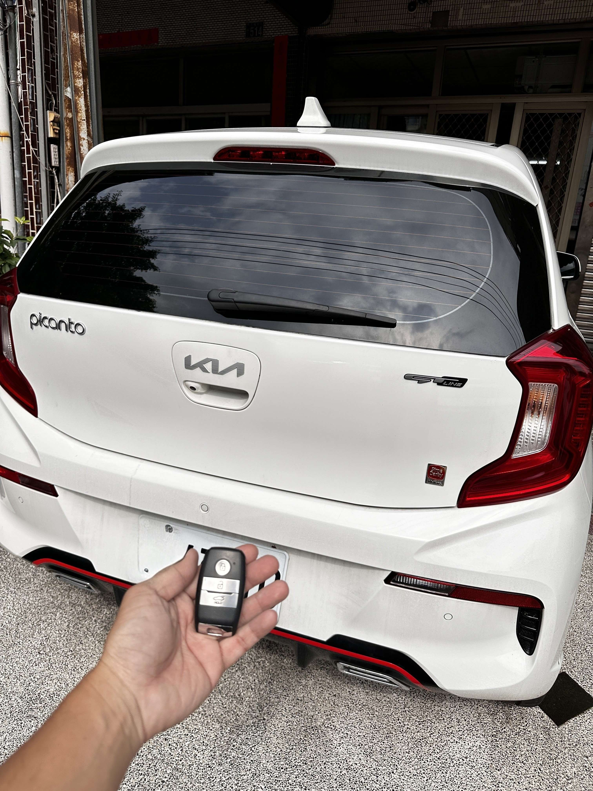

現場實錄：台中南屯 Kia Picanto GT-Line 智慧鑰匙全丟恢復完工
台中南屯：Kia Picanto 智慧鑰匙全丟，當場救援成功
今日接獲位於台中南屯的車主求助，其 Kia Picanto 智慧感應鑰匙不幸全數遺失。面對愛車完全無法發動且鎖閉的情況，車主原以為需要拖回原廠並等待漫長的料件期。極致核心職人接案後立即攜帶專業解碼設備與原廠等級智慧鑰匙前往現場。
技術核心：無損開鎖與精確匹配
Kia 車系的防盜系統精密，在「全丟 (All Keys Lost)」狀態下需要更專業的處理流程：
- 🎯 無損開鎖： 使用專用工具從車門鎖孔執行機械解碼，不傷車漆與結構。
- 💻 數據採集： 透過 OBDII 接口與防盜電腦連線，進行安全權限讀取。
- 🔑 晶片匹配： 現場完成新智慧鑰匙的防盜 ID 登錄與遙控設定。
經過約一小時的專業作業，我們成功為這輛 Picanto 匹配了全新的智慧感應鑰匙，並現場測試 Keyless Go 感應啟動與車門按鈕開解鎖功能，一切運作正常。
為什麼選擇極致核心 ProCore？
我們深耕中彰投，專精 Kia、Hyundai 等韓系車及各大歐系車防盜系統。針對「鑰匙全丟」提供最高效的現場解決方案，讓您免去拖吊煩惱，當場取件，即刻重回道路。